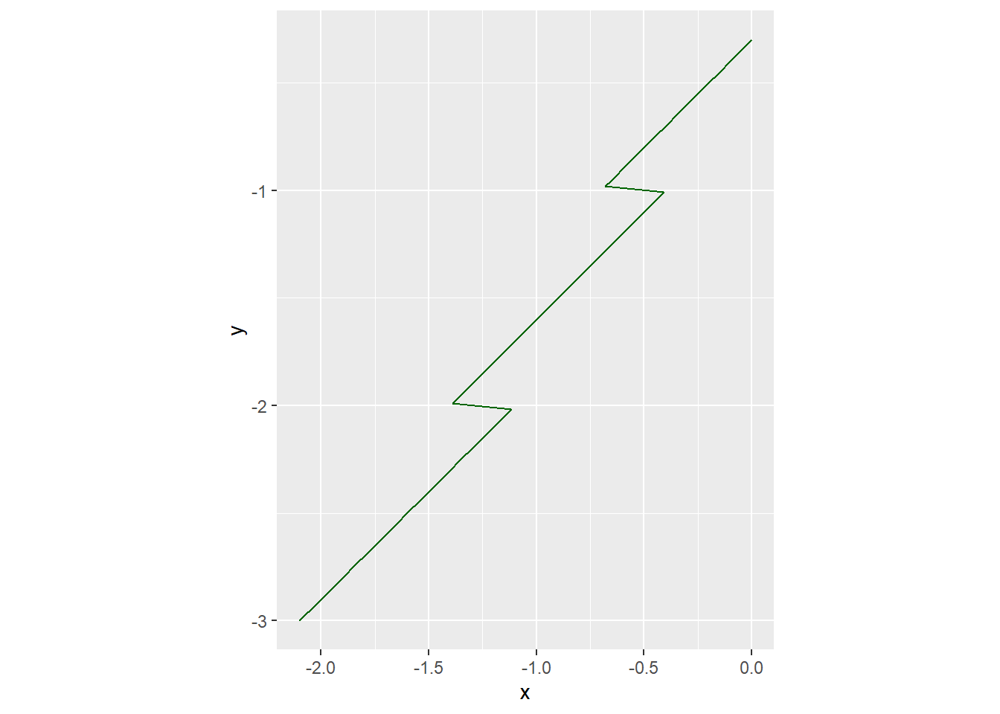
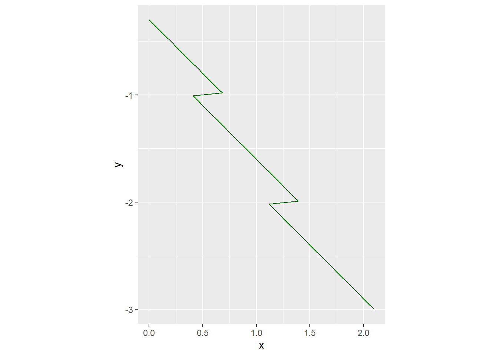
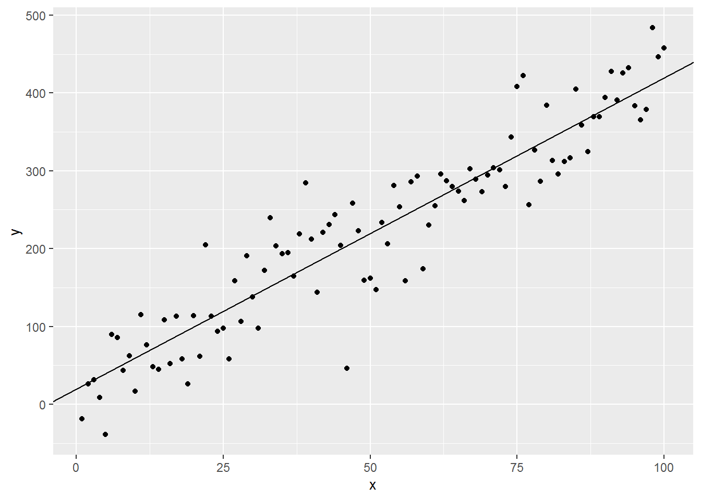
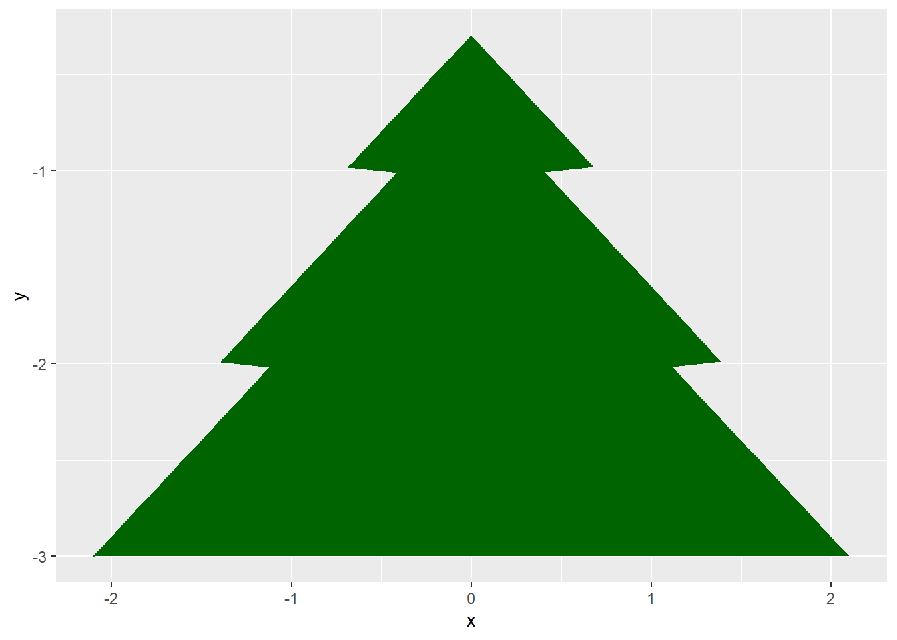

Seminar 10 Christmas special
Today we will work on our Christmas spirit, while practicing in generating data and plotting. Our end-product will be a Christmas tree plot that you see below. For this project you will need png library (you should have it already but check and install, if that is not the case) and a background image created by Gordon Dylan Johnson. Grab the exercise notebook as well!
{kind=link}
10.1 Left side of the tree
First we need a tree. We will generate its shape using a function: x = y - 0.3 * floor(y), where y should vary between -3 and -0.357 (you already know how to generate a sequence, so just decide on how many point you want your shape to have). This function describes a left part of the tree, so create a table called tree_left with corresponding x and y columns and plot it via ggplot2. Note that you need to use geom_path() rather than geom_line(). The former connects points in the order they appear in the table, whereas the latter first sort all variables based on the x-axis variable (try it out to see what I mean). You should get a plot like the one below.

Do exercise 1.
10.2 Right side of the tree
We could use an almost the same formula to generate the right side of the tree. Or, we can create it as a mirror copy of the tree_left. In the latter case, we must flip the sign of the x (so negative x become positive). And, a more subtle point, we need to reverse the order of all rows in the table, so that y goes from -0.3 to -3 (it is going from -3 to -0.3 in tree_left, take a look yourself). You can rearrange table using subsetting or by arranging the rows based on descending order of either y or row_number() (here, it will effectively give you an index for each row). The right side should look just like the left side (but mirrored!).

Do exercise 2.
10.3 The whole tree
Now let us draw the entire tree. We will do it in two ways, to practice. First, bind tables tree_left and tree_right by rows to create a new table (I called it tree_shape) and then reuse the same code with a single geom_path() call as before. Note that if you have an odd extra line going from bottom right to the top of the tree that means you did not reverse the tree_right table (see above).

Do exercise 3.
Alternatively, you can plot tree_left and tree_right separately by using two geom_path() calls. Here, you use data from different tables in a single plot, so you need to specify data parameter more than once. There are three ways to do it here. First, do not specify any data and aesthetics in the ggplot() call itself and use it explicitly in each geom_path() call. Note that you need to use named parameters via data=....
ggplot() +
geom_path(data=tree_left, aes(...), ...) +
geom_path(data=tree_right, aes(...), ...)Or, you can use tree_left (or tree_right) as a “main” data source and specify a different one only in one of the geom_path() calls:
ggplot(data=tree_left, aes(...), ...) +
geom_path() +
geom_path(data=tree_right)Here, I would suggest the first option of not specifying a “main” data source, as we will use even more different tables later on.
Do exercise 4.
10.4 Filling in the tree
Now, let us “fill in” the shape between the lines. For this, we will use geom_ribbon that fills in a shape either between vertical limits (when you specify ymin and ymax aesthetics) or between the horizontal ones (xmin and xmax). The latter is our case but first we need to combine our left and right shape into a single table with three columns: y coordinate and x_left and x_right coordinates. Think how can you join these the two tables tree_left and tree_right to achieve this (pause and ponder before reading further).

Hint: use a join but pay attention to suffix parameter as it will be useful. Put the new table into the tree variable (we will use it later again). Take a look at the table you get before plotting it using geom_ribbon.
Do exercise 5.
10.5 Adding background image
Our background is not very Christmasy. We should drop the grid altogether (which theme would be the best?) and replace it with a nice picture. To use this picture, you need the png library (import it in the setup chunk, not here!) and then use readPNG() function (see official docs or just type ?readPNG in console). Once you read an image into a variable (I imaginatively called it background), you can add it to the plot in two ways. A simpler way is by using function background_image() from ggpubr library. You add it to the plot just as you do with other geoms. However, this function is only a very thin wrapper for annotation_raster() call, so you could copy-paste it from the function body and use it directly:
# code from ggpubr github repository
background_image <- function(raster.img){
annotation_raster(raster.img,
xmin = -Inf, xmax = Inf,
ymin = -Inf, ymax = Inf)
}You new plot should look like this:
Do exercise 6.
10.6 Adding decoration (a boring one)
We need some decoration on our tree. Our task is to generate “Christmas balls” (geom_point()) at various locations within the tree. For this, we need to first randomly select rows from our tree table that you created in exercise 5 and then generate a random location within the tree limits for each sampled row. Let us deal with the first problem (randomly selecting riws, so, effectively, randomly selecting y coordinate) first.
To randomly sample rows from a table, you can use slice_sample function from dplyr. It takes a table and returns a new table with randomly sampled rows. You only need to specify a number of rows that you want to have in a new table either directly (parameter n) or as a proportion of number of rows in the original table (parameter prop). In our case, I used the latter and sampled half of the original tree table. You also need to decide on whether the same row can be sampled more than once (so-called sampling with replacement). I opted for this via replace=TRUE parameter. Finally, we want rows that describe the lower part of the tree to be sampled more often than the upper ones because we can put more decoration on them (the tree is wider). For this, we need to compute width of the tree for each row (a new column that I called x_range but you can call it width) before the sampling. Then, we can use that x_range for the weight_by parameter of the slice_sample. Put a sampled table into a new variable (I called it balls) and add it to the plot via geom_point(). For the moment, use x_left for x-coordinate. It will put all the balls on the left edge of the tree but we will fix this shortly.
balls <-
tree %>%
mutate(x_range = x_right - x_left) %>%
slice_sample(prop = 0.5, weight_by = x_range, replace=TRUE) %>%
mutate(x = runif(n(), x_left, x_right),
size = rnorm(n(), 5, 1),
icolor = factor(sample(1:5, n(), replace=TRUE)))
ggplot(tree_left, aes(x=x, y=y)) +
annotation_raster(background,
xmin = -Inf, xmax = Inf,
ymin = -Inf, ymax = Inf) +
geom_path(color="darkgreen") +
geom_ribbon(data=tree, aes(x=x_left, xmin=x_left, xmax=x_right), fill="darkgreen") +
geom_path(data=tree_right, color="darkgreen") +
geom_point(data=balls, aes(x=x_left, y=y)) +
theme_void()Do exercise 7.
10.7 Adding decoration (a bit more fun one)
We created the vertical location for each ball via random sampling. Now we need to generate a valid x-position somewhere in between x_left and x_right coordinates. Use runif() function for using x_left and x_right. Note that you need to specify the number of random values to generate. That should be the number of rows in the table. If you do it within mutate, use function n(). For base R, you can use nrow(). Create a new column x and use it for plotting. Note how plot changes every time you re-run the sampling or randomization code.

Do exercise 8.
10.8 Adding decoration (the fun ones)
Black tiny Christmas balls of the same size? That won’t do! Generate a new column (I called it size) with random ball sizes drawn from a normal distribution. Decide on a reasonable mean and standard deviation but remember that you need to specify the number of random values that you want (just like for runif() above).
Second, let as specify color of individual balls as a factor variable. This way, we can use it for color aesthetics and ggplot2 will use it palettes to pick the colors for us. Just create a vector of some numbers (the number of unique entries will be your number of colors) and convert it to a factor (check what will happen, if you won’t do this). Inside the geom_point() call, use show.legend=FALSE to suppress the legend (check what will happen, if you set it to TRUE or omit it).
Do exercise 9.
10.9 A star on top
Our final touch will be a star on the top of the tree. We could use another geom_point but with a different shape but instead we will draw it as a regular polygon with odd number of vertices, like the ones you see below. The numbers indicate the order in which vertices are created and drawn along the path. To make a closed contour, we very first (top) vertex needs to be also the last vertex, so you cannot see a label for #1 (it is covered by #6, #8, and #10 labels) but it is definitely where. Think how you can generate such a shape by walking around the circle with a given angular step and how you can compute x and y coordinates by knowing that angle and a radius (size) of the shape (here, I assumed radius to be 1).
star_plots <- purrr::map(c(5, 7, 9),
~tibble(theta = (0:.) * (4 * pi / .)) %>%
mutate(i = 1:n(),
x = sin(theta),
y = cos(theta)) %>%
ggplot(aes(x=x, y=y)) +
geom_path() +
geom_label(aes(label=i)) +
coord_equal())
star_plots[[1]] | star_plots[[2]] | star_plots[[3]]If you examine the plots above, you will see that you go around the circle in exactly N steps, where N is 5, 7, or 9. Thus you can compute an angular step between adjacent vertices by diving the length of a circle in degrees or radians by the number of steps you need to make. However, for our star we are not connecting each vertex to a adjacent one but to the next one. Think about what it means to the step size. Once you’ve figured out the step size, you can generate location of each vertex in term of a polar angle starting at 0 (top position) using that step. Note that you need to have N+1 vertices to close the contour and that serves as a nice sanity check as the polar angle for the first and the last entry mast be the same (keeping in mind that 0 is the same angle as 360° and \(2\cdot\pi\)). Later on, we want radians as we will use the angle with trigonometric functions but I suggest that you first generate a vector of angles in degrees, as it makes checking values easier.
To turn a polar angle into x/y coordinates, you need to recall basic trigonometry that is drawn below.
Figure 10.1: Cosine and sine on the unit circle by Stephan Kulla (User:Stephan Kulla) - Own work, CC0, https://commons.wikimedia.org/w/index.php?curid=57551646.
Pick the number of vertices that you like, generate polar angles, convert them to x and y coordinates, and plot the contour to check it visually. Try using geom_polygon with a fill color instead of geom_path.
Do exercise 10.
Our star is ready, we only need to add the geom_polygon. However, your “default” star will look way to big and will not be on the top of the tree, as in the figure below. Think how you can adjust the size (radius of the star) to make it smaller and what adjustment to y-coordinate do you need to make.
Do exercise 11.
10.10 Merry Christmas!
Although this assignment might look whimsical, it relies on techniques for parametrically generating data that are useful for real-life power analysis, prior predictive modelling, simulating data for model testing, etc.
You should definitely try different values for both y range and for the linear part itself to get a feeling of what it does to the shape you generate.↩︎